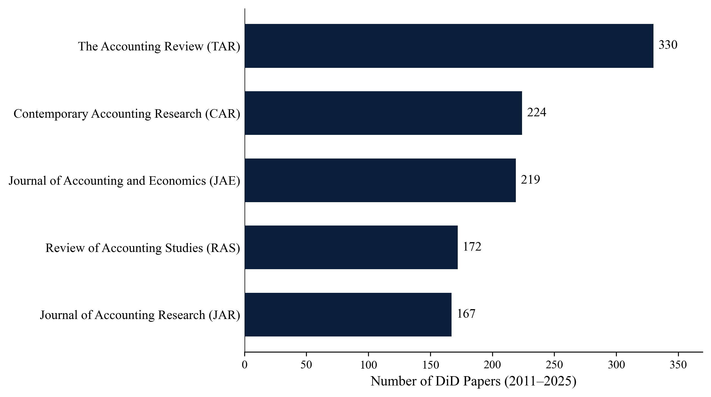
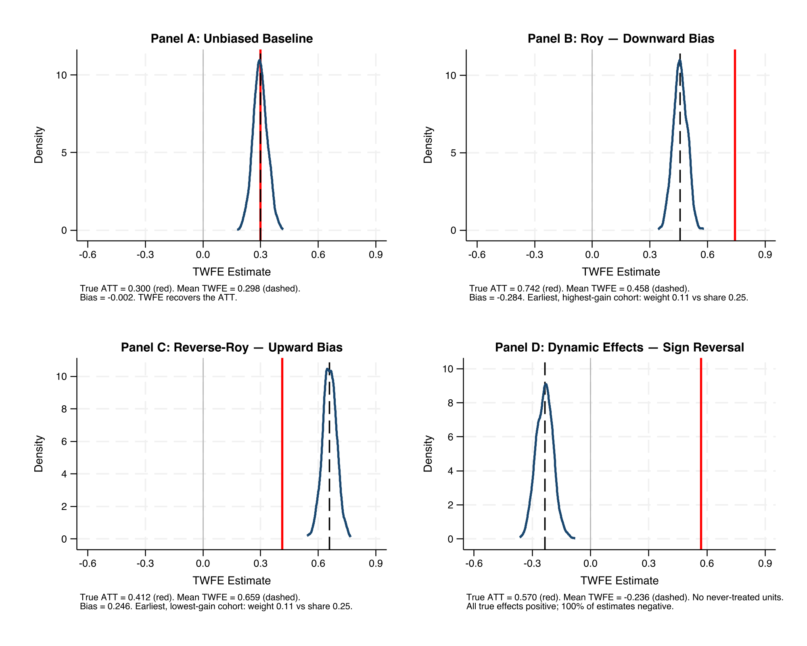
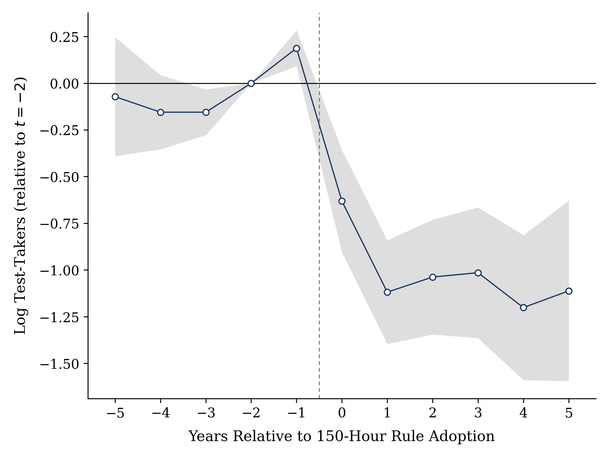
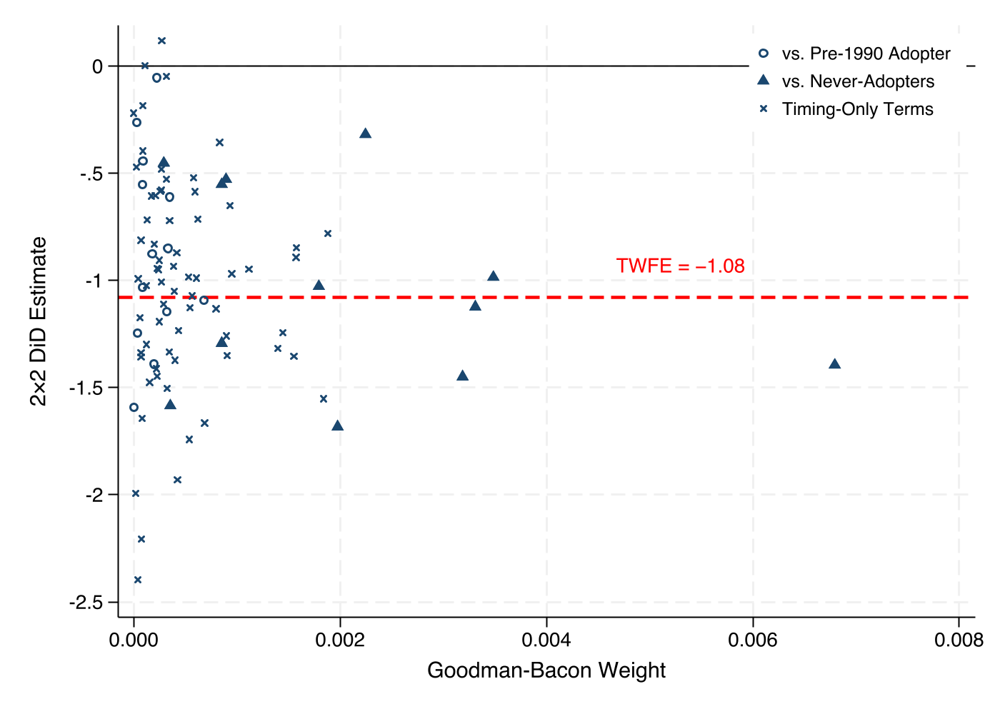
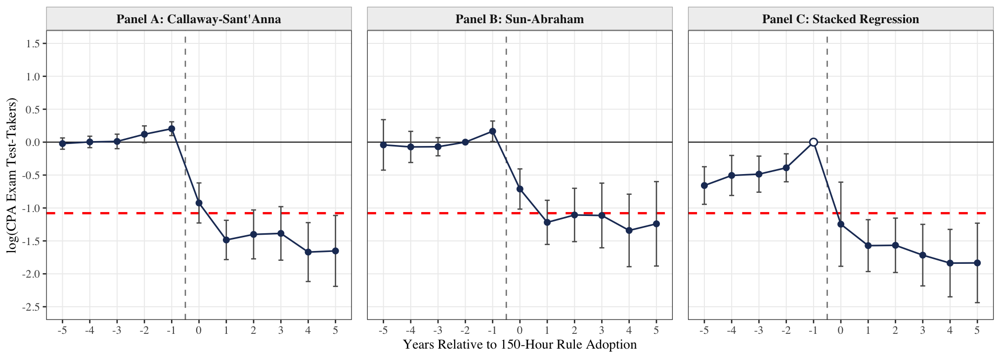

Abstract
I present the staggered difference-in-differences (DiD) method in accessible language to a broad accounting audience from an applied researcher's perspective. I begin by synthesizing recent advances in the econometrics of DiD designs in which multiple units receive treatment at different points in time. Using the Goodman-Bacon decomposition, I illustrate how heterogeneous treatment effects can bias the treatment effect estimate in a staggered DiD estimated with a two-way fixed effects regression. Using the staggered adoption of the 150-hour Rule as an example, I demonstrate several diagnostics and corrections that the econometrics literature has put forward. I close by reviewing what has changed in this literature since its first wave and translating the guidance into a step-by-step checklist that researchers, reviewers, and editors can use to evaluate staggered DiD designs.
Staggered DiD in Accounting Research
Between 2011 and 2025, more than 1,100 articles in five leading accounting journals mention a DiD design, and roughly 30 percent of DiD papers in the 2011–2020 window used staggered treatment timing. Standard setters phase in accounting standards, courts hand down rulings in different periods, and states adopt licensing rules year by year, so the staggered case is the common case. When treatment timing is staggered and effects differ across cohorts or over time, the coefficient from the usual two-way fixed effects regression is not an interpretable average treatment effect.

What the Simulations Show
The paper's simulations show how bad it can get. With staggered timing, no never-treated units, and treatment effects that grow over time, every one of 1,000 simulated TWFE estimates is negative even though every underlying treatment effect is positive by construction: the mean estimate is −0.236 against a true effect of +0.570. The mechanism is that already-treated cohorts, whose outcomes are still rising from their own treatment, serve as controls for later cohorts. Nothing about the data is pathological; the weighting does it.

The 150-Hour Application
The paper works through a single application: the effect of the 150-hour Rule on CPA exam candidates, across 53 licensing jurisdictions and 36 semi-annual exam sittings. The pooled TWFE estimate is −1.08 log points, roughly a two-thirds reduction in candidates. The event study also shows a 21 percent spike in the year before adoption, candidates rushing to sit the exam before the requirement bound. That anticipation turns out to be the estimate's real vulnerability, and no estimator fixes it, because it is a mistimed treatment date rather than a weighting problem.

The Goodman-Bacon decomposition shows where the estimate comes from: timing-only comparisons carry 53 percent of the weight, never-adopters 43 percent, and the one pre-1990 adopter 4 percent. The timing-only comparisons average −1.04, close to the −1.15 average from the clean never-adopter comparisons, which is why the high timing weight does not overturn the result here.

Applying the three first-wave corrections to the same outcome: Callaway–Sant'Anna gives −1.40 (SE 0.24), Sun–Abraham gives −1.12 (SE 0.22), and stacked regression gives −1.63 (SE 0.21), against TWFE's −1.08 (SE 0.15). The estimates span half a log point, though no two are statistically distinguishable, and much of the spread traces to which pre-period each estimator measures from, a consequential choice when the year before adoption is contaminated by anticipation.

Key Takeaways
The bias is arithmetic
TWFE is a weighted average of all pairwise 2×2 comparisons, including ones where already-treated units serve as controls. The Goodman-Bacon decomposition makes the weights visible.
Agreement among robust estimators is not validation
The correction methods fix the same defect, the weights, and every one still assumes parallel trends and no anticipation. Running five estimators answers one threat five times. Method should follow from a stated theory of what could go wrong.
Anticipation is economics, not a nuisance
In the 150-hour setting, the pre-adoption spike is a real behavioral response and the binding threat to the estimate. No reweighting repairs a mistimed treatment date; the remedy is design, moving the event date or dropping the window.
A checklist and a replication package
Appendix A collects the guidance into a design–estimation–inference–robustness–reporting checklist for authors, reviewers, and editors; the interactive version is below. A replication package reproduces every estimate in the paper.
Explore the Checklist
Appendix A collects the paper's guidance into a checklist ordered the way a project unfolds: design, estimation, inference, robustness, and reporting. Authors can walk through it before submission; reviewers and editors can use it to structure their evaluation of a staggered DiD study. Each item opens to show what to do and how it applies in the 150-hour setting. The copy button produces a plain-text version of the list.
What's New in the August 2026 Draft
This version adds a review of what has changed since the first wave of the econometrics, including imputation estimators and the extended TWFE, covariates as a design choice, honest pre-trends, inference with few treated clusters, and corrected stacking. It also adds coverage notes on triple differences, spillovers, and functional form, positions the paper against the recent econometrics guides, and ships a replication package that reproduces every estimate in the paper.